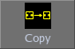
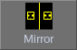
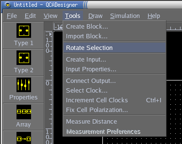
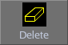

|


QCADesigner Documentation
Manipulating Cells
You can select any group of cells by left-clicking on the workspace, and dragging the mouse to create a selection rectangle. The cells contained in that selection rectangle will be hilighted in red. There are many things you can do with a selection:You can add cells to your selection by holding down Shift and creating a selection rectangle, as above. Deselected cells in the rectangle will be selected.
You can remove cells from your selection by holding down Ctrl and creating a selection rectangle. Selected cells in the rectangle will be deselected.
You can create a copy of your selection by clicking "Copy" . A copy of the selected cells will be created, and it will follow your mouse until you decide to drop them onto your design. If the location where you want to place the copy is off-screen, you can use the mouse wheel to scroll there. Alone, the mouse wheel scrolls the workspace up<->down. To scroll left<->right, hold down Ctrl while scrolling.
When you make a selection, the "Move"
![[Move]](images/move_button.png) button is automatically
pressed. Given any selection of cells, you may click this button to move the
selected cells elsewhere.
button is automatically
pressed. Given any selection of cells, you may click this button to move the
selected cells elsewhere.
TIP: To quickly move an individual cell, click "Move", and simply drag the cell to a new location. Drag another cell to a new location, then another, etc.
To mirror a selection of cells, first select the cells you would like to mirror. Then, click "Mirror" . Now, click on the workspace and drag the mouse to draw a horizontal or vertical line about which to mirror your selection. Hold down Ctrl to create a mirror copy of your cells. Those mirrored cells that overlap with existing cells are deleted during the "Mirror" operation.
To rotate a block of cells by 90°, first make a selection, then click "Tools->Rotate Selection":
Rotate Selection">
Your selection will be rotated 90°. Click the menu item again and again to rotate by 180° and 270°, respectively. The rotated selection will follow the mouse pointer until you decide to drop it somewhere on your design.
TIP: To rotate a copy of your selection, first make a selection, then click "Copy", then click "Tools->Rotate Selection". You don't even need to drop the selection before you click "Tools->Rotate Selection".
To delete a selection of cells, first make such a selection. Then, clicking "Delete"  will delete your selection. To delete individual cells, it is not necessary to select them. Simply click "Delete", then click on each cell you would like deleted.
Top of the page